Last updated: 2021-02-12
Checks: 7 0
Knit directory: AD-signature/
This reproducible R Markdown analysis was created with workflowr (version 1.6.2). The Checks tab describes the reproducibility checks that were applied when the results were created. The Past versions tab lists the development history.
Great! Since the R Markdown file has been committed to the Git repository, you know the exact version of the code that produced these results.
Great job! The global environment was empty. Objects defined in the global environment can affect the analysis in your R Markdown file in unknown ways. For reproduciblity it’s best to always run the code in an empty environment.
The command set.seed(20210212) was run prior to running the code in the R Markdown file. Setting a seed ensures that any results that rely on randomness, e.g. subsampling or permutations, are reproducible.
Great job! Recording the operating system, R version, and package versions is critical for reproducibility.
Nice! There were no cached chunks for this analysis, so you can be confident that you successfully produced the results during this run.
Great job! Using relative paths to the files within your workflowr project makes it easier to run your code on other machines.
Great! You are using Git for version control. Tracking code development and connecting the code version to the results is critical for reproducibility.
The results in this page were generated with repository version c07d0dc. See the Past versions tab to see a history of the changes made to the R Markdown and HTML files.
Note that you need to be careful to ensure that all relevant files for the analysis have been committed to Git prior to generating the results (you can use wflow_publish or wflow_git_commit). workflowr only checks the R Markdown file, but you know if there are other scripts or data files that it depends on. Below is the status of the Git repository when the results were generated:
Ignored files:
Ignored: .Rproj.user/
Untracked files:
Untracked: .DS_Store
Untracked: .Rprofile
Untracked: .gitattributes
Untracked: .gitignore
Untracked: _workflowr.yml
Untracked: analysis/_site.yml
Untracked: analysis/about.Rmd
Untracked: analysis/index.Rmd
Untracked: analysis/license.Rmd
Untracked: code/
Untracked: data/AppNL-G-F.microarray/MoGene-2_0-st-v1.na36.mm10.transcript.csv
Untracked: data/README.md
Untracked: data/zebrafish/
Untracked: output/
Unstaged changes:
Modified: APOE-TR 12m.Rmd
Note that any generated files, e.g. HTML, png, CSS, etc., are not included in this status report because it is ok for generated content to have uncommitted changes.
These are the previous versions of the repository in which changes were made to the R Markdown (analysis/APOE-TR_3m_12m.Rmd) and HTML (docs/APOE-TR_3m_12m.html) files. If you’ve configured a remote Git repository (see ?wflow_git_remote), click on the hyperlinks in the table below to view the files as they were in that past version.
| File | Version | Author | Date | Message |
|---|---|---|---|---|
| Rmd | c07d0dc | karissa | 2021-02-12 | APOE-tr additions |
library(tidyverse)
library(magrittr)
library(limma)
library(edgeR)
library(fgsea)
library(ggfortify)
library(ggrepel)
library(goseq)
library(cqn)
library(scales)
library(harmonicmeanp)
library(readxl)
library(gridExtra)
library(grid)
library(AnnotationHub)
library(ensembldb)
library(msigdbr)
# Visualisation
library(ggpubr)
library(pheatmap)
library(UpSetR)
library(kableExtra)
library(pander)
library(rtracklayer)
library(RColorBrewer)
library(cowplot)
library(ggeasy)
library(pathview)
library(ggsci)
# We will use a function by Ben Marwick for raincloud plots
# This code loads the function in the working environment
source("https://gist.githubusercontent.com/benmarwick/2a1bb0133ff568cbe28d/raw/fb53bd97121f7f9ce947837ef1a4c65a73bffb3f/geom_flat_violin.R")ah <- AnnotationHub() %>%
subset(species == "Mus musculus") %>%
subset(rdataclass == "EnsDb")
ens98 <- ah[["AH75036"]] # for release 98
ex <- exonsBy(ens98, "tx")
tr <- transcripts(ens98)
gn <- genes(ens98)
# get the lengths of transcripts from the ensdb object
tr$len <- ex %>%
width %>%
lapply(sum) %>%
.[names(tr)] %>%
unlist()
# also get the mean GC (weighted by transcript length) and the mean length of alternate transcripts per gene.
gc_len <- mcols(tr) %>%
as.data.frame() %>%
group_by(gene_id) %>%
summarise(
n = n(),
meanGC = sum(len*gc_content) / sum(len),
len = mean(len)
) %>%
left_join(gn %>% as.data.frame() %>% dplyr::select(gene_id, gene_name, gene_biotype, description, seqnames, entrezid)) %>%
column_to_rownames("gene_id")counts_zhaeoetal <- read_tsv("data/APOE-TR/04_featurecounts_zhaoetal/featureCounts_q10_ensRelease98.txt", skip = 1) %>%
dplyr::select(-c(Chr, Start, End, Strand, Length)) %>%
column_to_rownames("Geneid")
# tidy up column names
colnames(counts_zhaeoetal) %<>%
str_remove(pattern = "Aligned.sortedByCoord.out.bam") %>%
str_remove(pattern = "^[:alnum:]+_") %>%
str_remove(pattern = ".FCH[:alnum:]+_[:alnum:]+_[:alnum:]+")This information was obtained from synapse. The metadata about the mice is over 2 spreadsheets. So i need to join them together.
meta_zhaoetal <- read_csv("data/APOE-TR/APOE-TR_biospecimen_metadata.csv") %>%
dplyr::filter(specimenID %in% colnames(counts_zhaeoetal)) %>%
dplyr::select(individualID, specimenID) %>%
left_join(
read_csv("data/APOE-TR/APOE-TR _mouse_metadata.csv")
) %>%
mutate(
Genotype = factor(genotype, levels = c("APOE3", "APOE2", "APOE4")),
Sex = factor(sex),
Age = case_when(
specimenID = grepl(specimenID, pattern = "3M") ~ "3M",
individualID = grepl(individualID, pattern = "12M") ~ "12M",
individualID = grepl(individualID, pattern = "24M") ~ "24M"
),
sample = specimenID
) %>%
mutate(Age = factor(Age, levels = c("3M", "12M", "24M"))) %>%
mutate(
group = paste0(Genotype, "_", Age, "_", Sex) %>% as.factor(),
group_agebyGenotype = paste0(Genotype, "_", Age) %>% as.factor(),
litter = str_replace_all(dateBirth, pattern = "/", replacement = ".")
) %>%
dplyr::select(-age, - genotype, - sex) %>%
column_to_rownames("specimenID")
# extract the seq lane info from colnaqmes of featurecounts matrix and add to metadata
lanes <- read_tsv("data/APOE-TR/04_featurecounts_zhaoetal/featureCounts_q10_ensRelease98.txt",
skip = 1) %>%
colnames() %>%
as_tibble() %>%
dplyr::slice(-(1:6)) %>%
set_colnames("sample") %>%
mutate(lane = str_extract(sample, pattern ="L\\d"),
sample = str_remove(sample, pattern = "Aligned.sortedByCoord.out.bam"),
sample = str_remove(sample, pattern = "^[:alnum:]+_"),
sample = str_remove(sample, pattern = "\\.FCH.+")
)
meta_zhaoetal %<>%
left_join(lanes)In mice, only males contain the Y chromosome. Therefore, this allows me to confirm the sex of the samples by examining whether genes on the Y chromosome are expressed in the brains. Here, I will extract the genes from the Y chromosome which were detected in the RNA-seq experiment, and determine whether they are only expressed in males. Note that only 4 genes were detected.
yGenes <-
gc_len %>%
as.data.frame() %>%
rownames_to_column("gene_id") %>%
dplyr::filter(seqnames == "Y") %>%
.$gene_id
beforecorrect_sex <-
counts_zhaeoetal %>%
as.data.frame() %>%
.[yGenes,] %>%
.[rowSums(cpm(.) >= 1) >= 47,] %>%
rownames_to_column("gene_id") %>%
gather(key = "sample", value = "counts", starts_with("A")) %>%
left_join(meta_zhaoetal) %>%
dplyr::filter(Age == "3M") %>%
left_join(gc_len %>%
as.data.frame() %>%
rownames_to_column("gene_id") %>%
dplyr::select(gene_id, gene_name)) %>%
dplyr::select(gene_name, sample, Sex, counts) %>%
ggplot(aes(x = sample, y = counts, fill = Sex)) +
geom_boxplot(outlier.shape = NA, alpha = 0.8) +
facet_wrap(~Sex, ncol = 1, scales = "free") +
theme_bw() +
easy_rotate_x_labels(angle = 315) +
theme(legend.position = "none")
beforecorrect_sexDistribution of counts assigned to genes on the Y chromosom
Sample APOE_3M_21 appears to be a male sample, and samples APOE_3M_30 and APOE_3M_7 appear to be female. Therefore, I will update the meta object to reflect this, Now all samples appeaar correct.
meta_zhaoetal %<>%
mutate(Sex = as.character(Sex),
Sex = case_when(
sample == "APOE_3M_21" ~ "male",
sample == "APOE_3M_30" ~ "female",
sample == "APOE_3M_7" ~ "female",
TRUE ~ Sex
),
Sex = as.factor(Sex))
# Then fix the group factor in the metadata spreadhset
meta_zhaoetal %<>%
as.data.frame() %>%
rownames_to_column("Sample") %>%
mutate(
group = paste0(Genotype, "_", Age, "_", Sex) %>% as.factor(),
group_agebyGenotype = paste0(Genotype, "_", Age) %>% as.factor()
) %>%
column_to_rownames("Sample")
ggarrange(beforecorrect_sex,
counts_zhaeoetal %>%
as.data.frame() %>%
.[yGenes,] %>%
.[rowSums(cpm(.) >= 1) >= 47,] %>%
rownames_to_column("gene_id") %>%
gather(key = "sample", value = "counts", starts_with("A")) %>%
left_join(meta_zhaoetal) %>%
dplyr::filter(Age == "3M") %>%
left_join(gc_len %>%
as.data.frame() %>%
rownames_to_column("gene_id") %>%
dplyr::select(gene_id, gene_name)) %>%
dplyr::select(gene_name, sample, Sex, counts) %>%
ggplot(aes(x = sample, y = counts, fill = Sex)) +
geom_boxplot(outlier.shape = NA, alpha = 0.8) +
facet_wrap(~Sex, ncol = 1, scales = "free") +
theme_bw() +
easy_rotate_x_labels(angle = 315) +
theme(legend.position = "none"),
labels = "AUTO",
ncol = 1
) 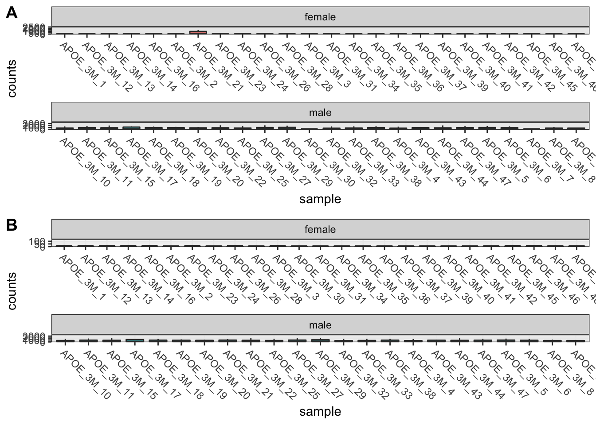
#ggsave("plotsforpub/checksex.png", width = 18, height = 10, units = "cm", dpi = 800, scale = 1.5)Only the 3m samples are retained.
x_zhaoetal<-
counts_zhaeoetal %>%
dplyr::select(meta_zhaoetal %>%
dplyr::filter(Age == "3M") %>%
.$sample) %>%
.[rowSums(cpm(.) >= 2) >= 8,] %>%
DGEList(
samples = tibble(sample = colnames(.)) %>%
left_join(meta_zhaoetal),
genes = gc_len[rownames(.),]
) %>%
calcNormFactors("TMM") %>%
estimateDisp()Design matrix not provided. Switch to the classic mode.a <-
cpm(counts_zhaeoetal, log = TRUE) %>%
as.data.frame() %>%
pivot_longer(
cols = everything(),
names_to = "sample",
values_to = "logCPM"
) %>%
split(f = .$sample) %>%
lapply(function(y){
d <- density(y$logCPM)
tibble(
sample = unique(y$sample),
x = d$x,
y = d$y
)
}) %>%
bind_rows() %>%
left_join(x_zhaoetal$samples) %>%
dplyr::filter(Age == "3M") %>%
ggplot(aes(x, y, colour = Genotype, group = sample)) +
geom_line() +
labs(
x = "logCPM",
y = "Density",
colour = "Genotype"
) +
scale_color_viridis_d(option = "plasma", end = 0.8) +
ggtitle("Before filtering") +
theme_bw()
ggarrange(a,
cpm(x_zhaoetal, log = TRUE) %>%
as.data.frame() %>%
pivot_longer(
cols = everything(),
names_to = "sample",
values_to = "logCPM"
) %>%
split(f = .$sample) %>%
lapply(function(y){
d <- density(y$logCPM)
tibble(
sample = unique(y$sample),
x = d$x,
y = d$y
)
}) %>%
bind_rows() %>%
left_join(x_zhaoetal$samples) %>%
ggplot(aes(x, y, colour = Genotype, group = sample)) +
geom_line() +
labs(
x = "logCPM",
y = "Density",
colour = "Genotype"
) +
scale_color_viridis_d(option = "plasma", end = 0.8) +
ggtitle("After filtering") +
theme_bw(),
common.legend = TRUE,
labels = "AUTO") 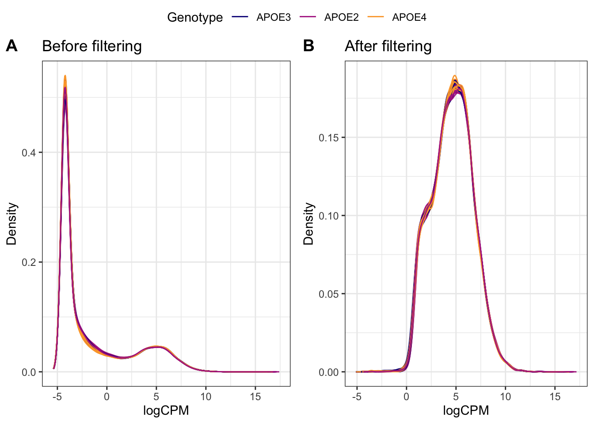
#ggsave("plotsforpub/filtering.png", width = 15, height = 5, units = "cm", scale = 1.4)ggarrange(
x_zhaoetal %>%
cpm(log = TRUE) %>%
t() %>%
prcomp() %>%
autoplot(data = tibble(sample = rownames(.$x)) %>%
left_join(x_zhaoetal$samples),
colour = "Genotype",
shape = "Sex",
size = 4
) +
theme_bw() +
scale_color_viridis_d(option = "plasma", end = 0.8) +
theme(legend.position = "left"),
x_zhaoetal %>%
cpm(log = TRUE) %>%
t() %>%
prcomp() %>%
autoplot(data = tibble(sample = rownames(.$x)) %>%
left_join(x_zhaoetal$samples),
colour = "dateBirth",
shape = "Genotype",
size = 4
) +
theme_bw() +
scale_color_futurama() +
# scale_color_manual(values = brewer.pal(name = "Paired",
# n = 11))+
theme(legend.position = "right") +
labs(colour = "Litter"),
common.legend = F,
labels = "AUTO"
)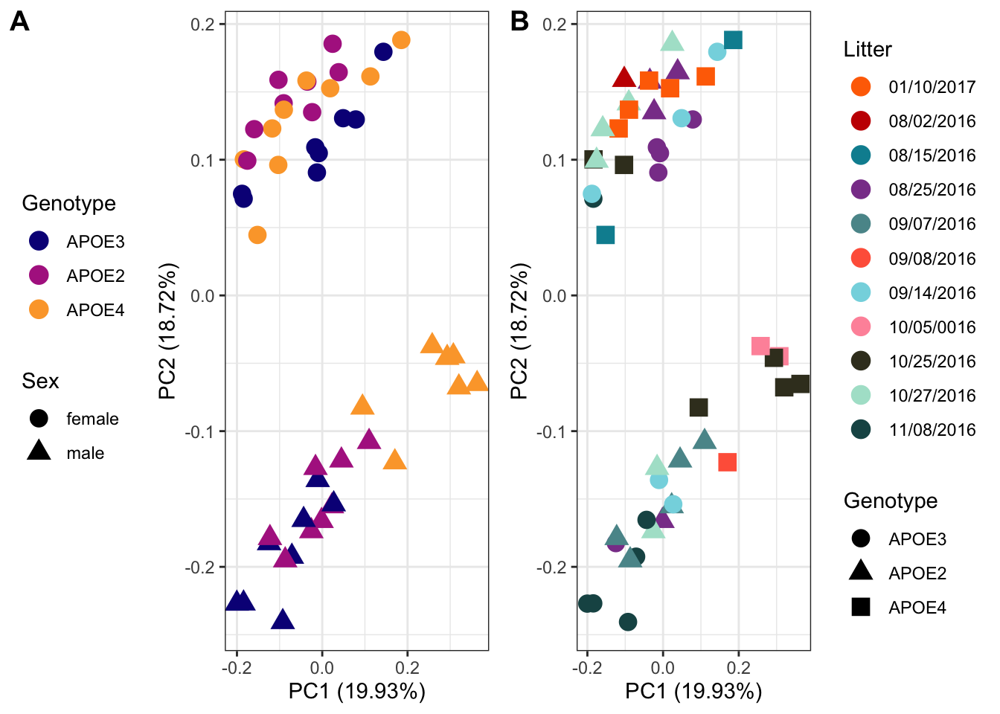
# ggsave("plotsforpub/PCA_all.png", width = 18, height = 8, units = "cm", scale = 1.4)
x_zhaoetal %>%
cpm(log = TRUE) %>%
t() %>%
prcomp() %>%
autoplot(data = tibble(sample = rownames(.$x)) %>%
left_join(x_zhaoetal$samples),
colour = "lane",
shape = "Genotype",
size = 4
) +
theme_bw() +
scale_color_d3()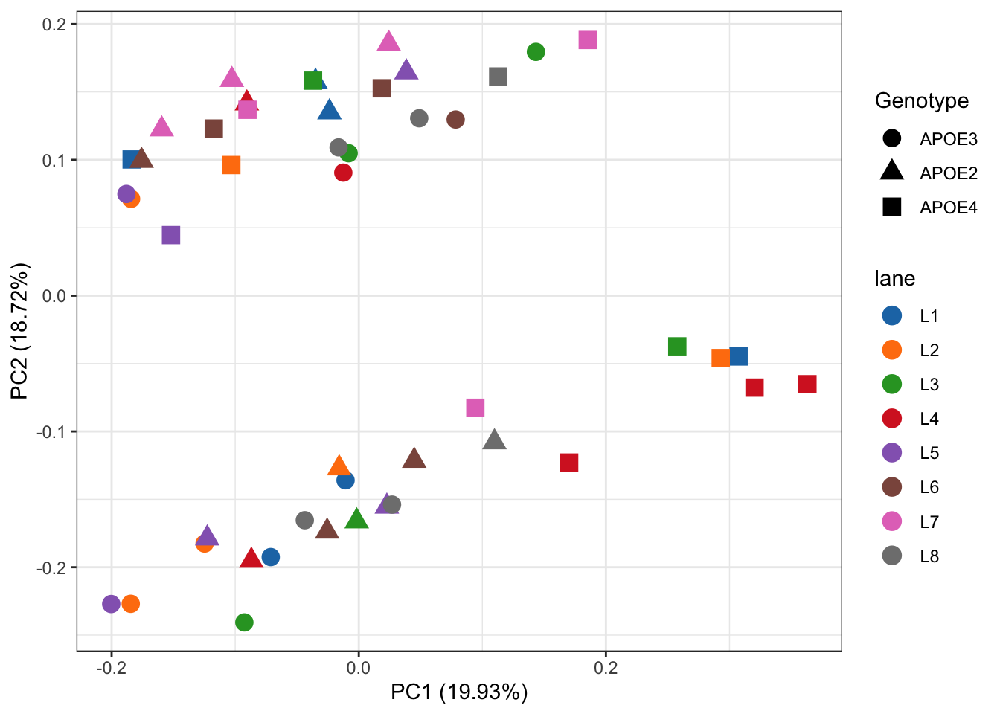
theme(legend.position = "left")List of 1
$ legend.position: chr "left"
- attr(*, "class")= chr [1:2] "theme" "gg"
- attr(*, "complete")= logi FALSE
- attr(*, "validate")= logi TRUEallsampHM <- cpm(x_zhaoetal, log = TRUE) %>%
t() %>%
dist(method = "euclidean") %>%
as.matrix()
allsampHM_anno <- tibble(
sample = colnames(allsampHM)) %>%
left_join(x_zhaoetal$samples) %>%
dplyr::select(sample, Genotype, Sex , litter = dateBirth) %>%
column_to_rownames("sample")
newCols <- colorRampPalette(brewer.pal(name = "Paired",
n = length(unique(allsampHM_anno$litter))))
mycolors <- newCols(length(unique(allsampHM_anno$litter)))
names(mycolors) <- unique(allsampHM_anno$litter)
mycolors <- list(litter = mycolors,
Sex = c("male" = "blue", "female" = "red"),
Genotype = c("APOE3" = "black", "APOE2" = "grey75", "APOE4" = "grey35"))
#png("plotsforpub/sampleheatmap.png", width = 1000, height = 1000, res = 100)
pheatmap(allsampHM,
color = viridis_pal()(1000),
annotation_col = allsampHM_anno,
annotation_colors = mycolors,
treeheight_row = 0,
cellwidth = 8,
cellheight = 8,
fontsize_row = 7,
fontsize_col = 7
)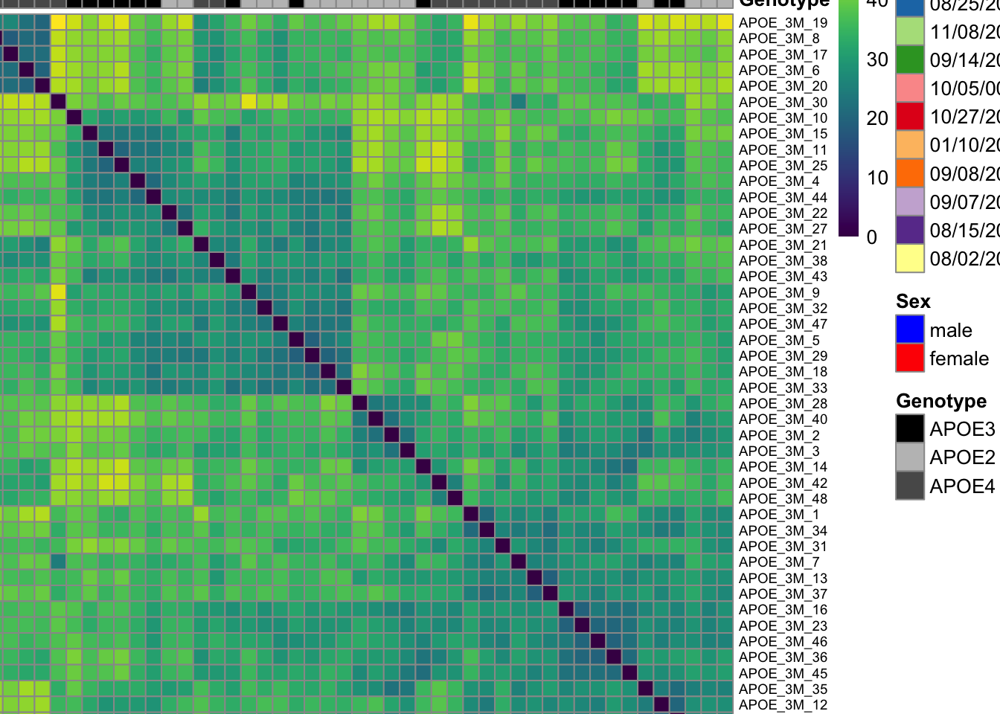
#dev.off()x_zhaoetal$samples %>%
ggplot(aes(x = sample, y = lib.size, fill = Genotype)) +
geom_col() +
facet_wrap(~Genotype, scales = "free_x") +
theme_bw() +
easy_rotate_x_labels(angle = 315) 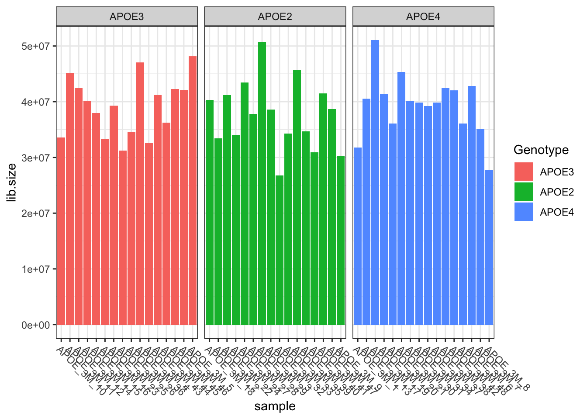
table(x_zhaoetal$samples$Genotype, x_zhaoetal$samples$dateBirth) %>%
chisq.test()
Pearson's Chi-squared test
data: .
X-squared = 82.667, df = 20, p-value = 1.378e-09# males only
table(x_zhaoetal$samples %>%
dplyr::filter(Sex == "male") %>%
.$Genotype,
x_zhaoetal$samples %>%
dplyr::filter(Sex == "male") %>%
.$dateBirth
) %>%
chisq.test()
Pearson's Chi-squared test
data: .
X-squared = 43.125, df = 14, p-value = 8.182e-05## females only
table(x_zhaoetal$samples %>%
dplyr::filter(Sex == "female") %>%
.$Genotype,
x_zhaoetal$samples %>%
dplyr::filter(Sex == "female") %>%
.$dateBirth
) %>%
chisq.test()
Pearson's Chi-squared test
data: .
X-squared = 39.286, df = 14, p-value = 0.0003294design <- model.matrix(~0 + group,
data = x_zhaoetal$samples) %>%
set_colnames(gsub(pattern = "group",
replacement = "",
x = colnames(.)))
contrasts <- makeContrasts(
levels = colnames(design),
`Female 2v3` = APOE2_3M_female - APOE3_3M_female,
`Male 2v3` = APOE2_3M_male - APOE3_3M_male,
`Female 4v3` = APOE4_3M_female - APOE3_3M_female,
`Male 4v3` = APOE4_3M_male - APOE3_3M_male
)fit_1_zhaoetal <- x_zhaoetal %>%
glmFit(design)
# call the toptables
topTables_glm_zhaoetal <- colnames(contrasts) %>%
sapply(function(x){
glmLRT(fit_1_zhaoetal, contrast = contrasts[,x]) %>%
topTags(n = Inf) %>%
.[["table"]] %>%
as.data.frame() %>%
rownames_to_column("gene_id") %>%
as_tibble() %>%
arrange(PValue) %>%
mutate(
comparison = x,
DE = FDR < 0.05) %>%
dplyr::select(gene_name, logFC, logCPM, PValue, FDR, description, everything())
}, simplify = FALSE)topTables_glm_zhaoetal %>%
lapply(function(x){
x %>%
mutate(direction = case_when(
sign(logFC) == "1" ~ "up",
sign(logFC) == "-1" ~ "down"
))
}) %>%
bind_rows() %>%
dplyr::filter(DE == TRUE) %>%
mutate(Sex = case_when(
grepl(comparison, pattern = "Male") ~ "male",
grepl(comparison, pattern = "Female") ~ "female",
),
comparison = case_when(
grepl(comparison, pattern = "4v3") ~ "APOE4 v APOE3",
grepl(comparison, pattern = "2v3") ~ "APOE2 v APOE3",
)) %>%
ggplot(aes(y = `comparison`)) +
geom_bar(stat = "count",
width = 0.5,
aes(fill = `direction`),
position = "dodge") +
easy_rotate_x_labels(angle = 315) +
theme_bw() +
scale_fill_npg() +
theme(legend.position = "bottom") +
ggtitle("Number of DE genes in each comparison") +
labs(x = "Number of DE genes",
y = "Contrast",
colour = "Direction of change") +
facet_wrap(~Sex, scales = "free_y")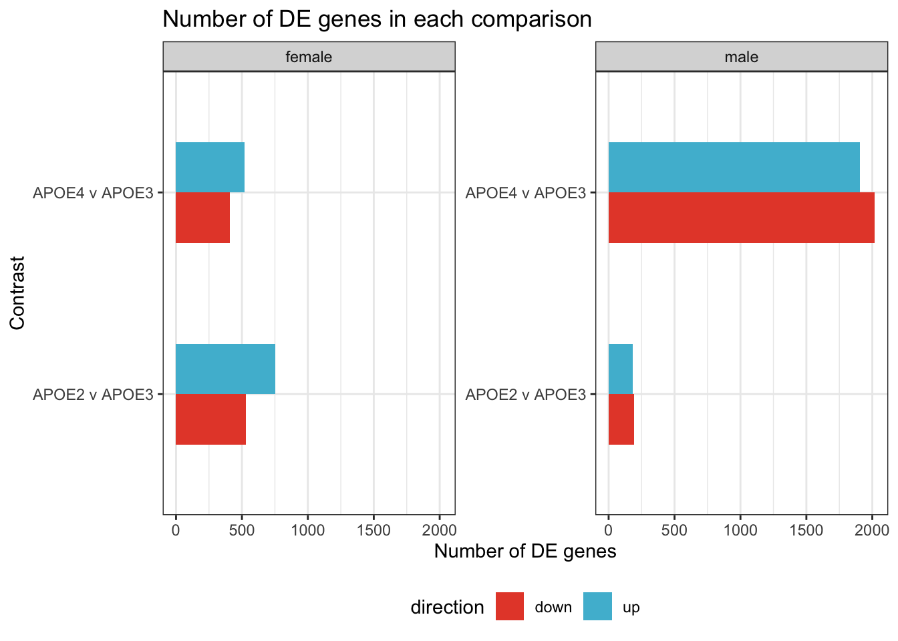
#ggsave("plotsforpub/initialDe.png", width = 10, height = 5, units = "cm", dpi = 800, scale = 2)
topTables_glm_zhaoetal %>%
bind_rows() %>%
ggplot(aes(x = logFC, y = -log10(PValue))) +
geom_point(aes(colour = DE)) +
facet_wrap(~ comparison, scales = "free") +
theme_bw() +
scale_color_manual(values = c("grey50", "red"))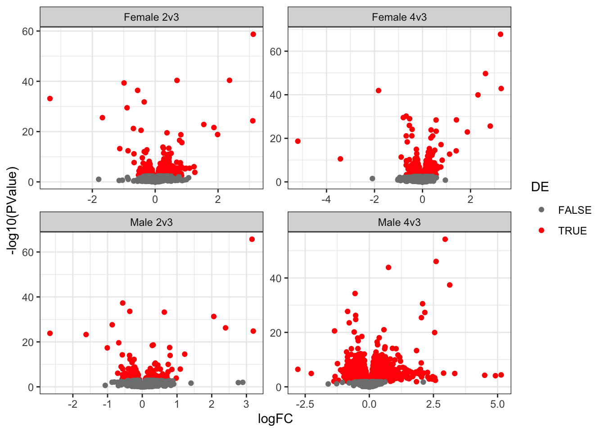
topTables_glm_zhaoetal %>%
bind_rows() %>%
ggplot(aes(x = logCPM, y = logFC)) +
geom_point(aes(colour = DE), alpha = 0.5) +
facet_wrap(~ comparison, scales = "free") +
scale_color_manual(values = c("grey50", "red")) +
theme_bw()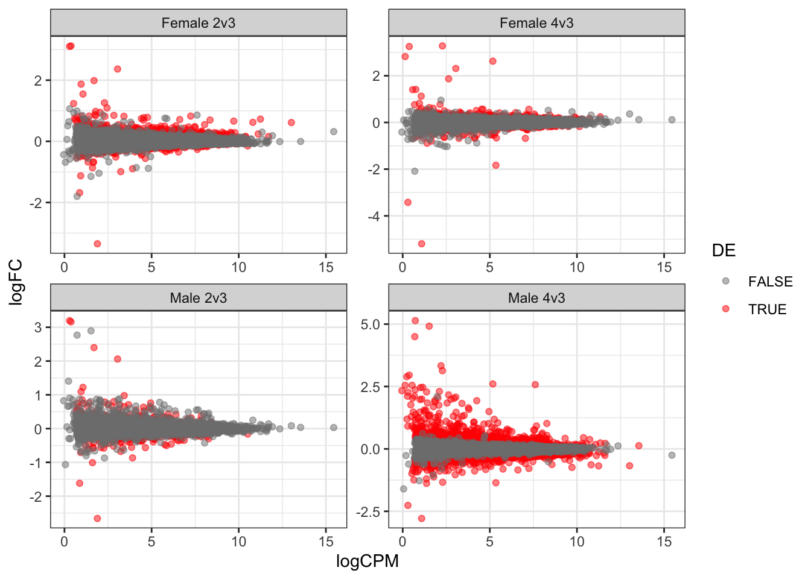
ggarrange(topTables_glm_zhaoetal %>%
bind_rows() %>%
mutate(rankstat = sign(logFC)*-log10(PValue)) %>%
ggplot(aes(x = meanGC, y = rankstat)) +
geom_point(alpha = 0.5,
aes(colour = DE)) +
coord_cartesian(ylim = c(-20, 20)) +
facet_wrap(~comparison, scales = "free") +
scale_color_manual(values = c("grey50", "red")) +
theme_bw() +
labs(x = "Weighted average %GC per gene",
y = "sign(logFC)*-log10(PValue)",
colour = "Differentially expxressed?") +
geom_smooth(se = F),
topTables_glm_zhaoetal %>%
bind_rows() %>%
mutate(rankstat = sign(logFC)*-log10(PValue)) %>%
ggplot(aes(x = len, y = rankstat)) +
geom_point(alpha = 0.5,
aes(colour = DE)) +
coord_cartesian(ylim = c(-20, 20)) +
scale_x_log10() +
facet_wrap(~ comparison, scales = "free") +
scale_color_manual(values = c("grey50", "red")) +
theme_bw() +
labs(x = "Average transcript length per gene ",
y = "sign(logFC)*-log10(PValue)",
colour = "Differentially expxressed?") +
geom_smooth(se = F),
labels = c("B", "C"),
nrow = 1,
common.legend = TRUE
) 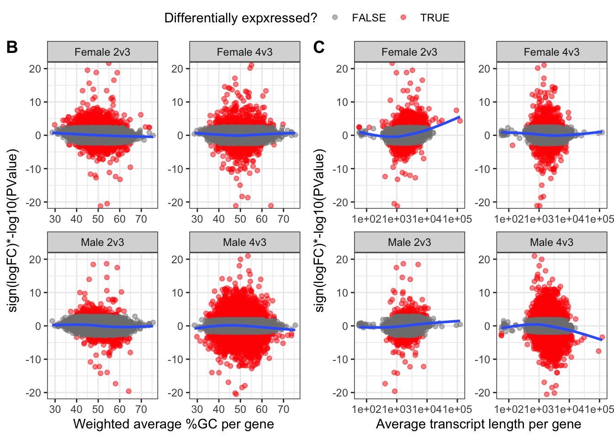
#ggsave("plotsforpub/GC_len.png", width = 18, height = 8, units = "cm", dpi = 800, scale = 2)Since I observe bias for GC content and length for this dataset, cqn normalisation <Hansen et al, 2012> link is warranted. cqn is a normalisation technique which produces an offset for each gene, which corrects for GC content and length. This offset is compatible with edgeR, so I will perform the cqn normalisation then use this offset with the edgeR generalised linear model capabilities (negative binomial distribution) and liklihood ratio tests for differential expression.
cqn_zhaoetal <-
x_zhaoetal %>%
with(
cqn(
counts = counts,
x = genes$meanGC,
lengths = genes$len,
sizeFactors = samples$lib.size
)
)par(mfrow = c(1, 2))
cqnplot(cqn_zhaoetal, n = 1, xlab = "GC Content")
cqnplot(cqn_zhaoetal, n = 2, xlab = "Length")Model fits for GC content and gene length under the CQN model. Variability is clearly visible, particularly for length
par(mfrow = c(1, 1))PCA analysis was repeated. Similar clustering of samples was observed across PC1. However, samples appeared closer together.
logCPM_zhaeoetal <- cqn_zhaoetal$y + cqn_zhaoetal$offset
ggarrange(
logCPM_zhaeoetal %>%
t() %>%
prcomp() %>%
autoplot(data = tibble(sample = rownames(.$x)) %>%
left_join(x_zhaoetal$samples),
colour = "Genotype",
shape = "Sex",
size = 4
) +
theme_bw() +
scale_color_viridis_d(option = "plasma", end = 0.8) +
theme(legend.position = "left"),
logCPM_zhaeoetal %>%
t() %>%
prcomp() %>%
autoplot(data = tibble(sample = rownames(.$x)) %>%
left_join(x_zhaoetal$samples),
colour = "dateBirth",
shape = "Genotype",
size = 4
) +
theme_bw() +
scale_color_futurama() +
theme(legend.position = "right") +
labs(colour = "Litter"),
common.legend = F,
labels = "AUTO"
) 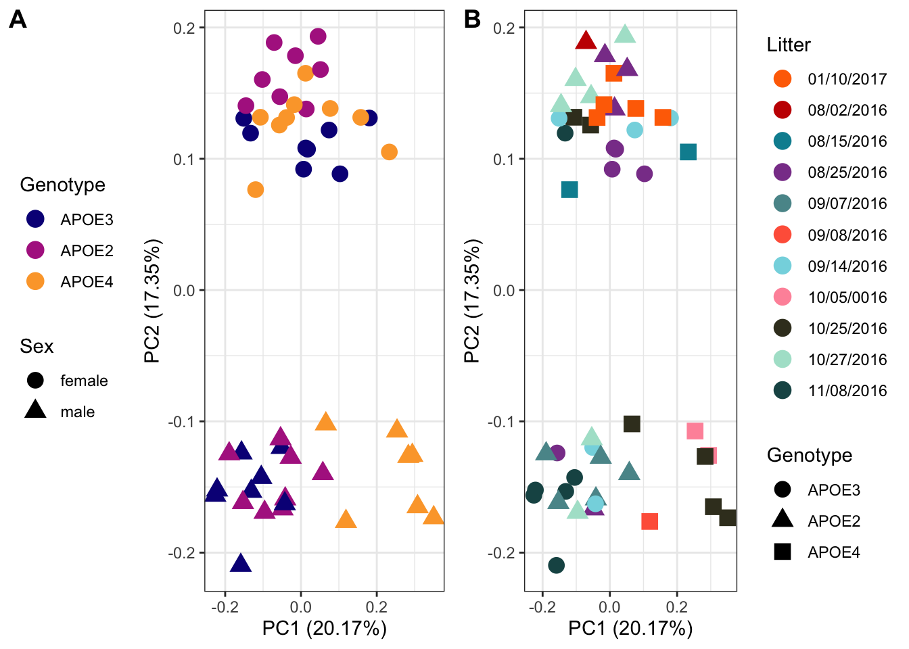
#ggsave("plotsforpub/PCA_cqn.png", width = 18, height = 8, units = "cm", scale = 1.4)# Add the offset to the dge object
x_zhaoetal$offset <- cqn_zhaoetal$glm.offset
# fit the glm
fit_cqn <- glmFit(x_zhaoetal, design)
# call the top table
toptables_cqn <- colnames(contrasts) %>%
sapply(function(x){
glmLRT(fit_cqn, contrast = contrasts[,x]) %>%
topTags(n = Inf) %>%
.[["table"]] %>%
as.data.frame() %>%
rownames_to_column("gene_id") %>%
as_tibble() %>%
arrange(PValue) %>%
mutate(
coef = x,
pbonf = p.adjust(PValue, "bonferroni"),
DE = FDR < 0.05) %>%
dplyr::select(gene_name, logFC, logCPM, PValue, pbonf, FDR, description, everything())
}, simplify = FALSE)toptables_cqn %>%
lapply(function(x){
x %>%
mutate(Direction = case_when(
sign(logFC) == "1" ~ "up",
sign(logFC) == "-1" ~ "down"
))
}) %>%
bind_rows() %>%
mutate(Sex = case_when(
grepl(coef, pattern = "Male") ~ "male",
grepl(coef, pattern = "Female") ~ "female",
),
comparison = case_when(
grepl(coef, pattern = "4v3") ~ "APOE4 v APOE3",
grepl(coef, pattern = "2v3") ~ "APOE2 v APOE3",
)) %>%
dplyr::filter(DE == TRUE) %>%
ggplot(aes(y = `comparison`)) +
geom_bar(stat = "count",
width = 0.5,
aes(fill = Direction),
position = "dodge") +
easy_rotate_x_labels(angle = 315) +
theme_bw() +
scale_fill_npg() +
theme(legend.position = "bottom") +
ggtitle("Number of DE genes in each comparison") +
labs(x = "Number of DE genes",
y = "Contrast",
colour = "Direction of change") +
facet_wrap(~Sex, scales = "free_y") 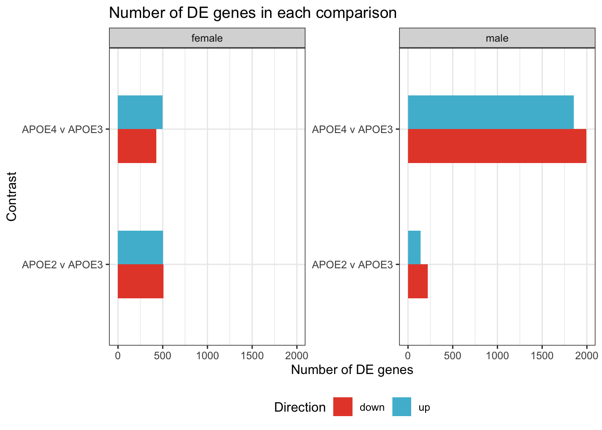
#ggsave("plotsforpub/cqn_noDEgenes.png", width = 10, height = 5, units = "cm", dpi = 800, scale = 2)
ggarrange(
ggarrange(toptables_cqn %>%
bind_rows() %>%
mutate(rankstat = sign(logFC)*-log10(PValue)) %>%
ggplot(aes(x = meanGC, y = rankstat)) +
geom_point(alpha = 0.5,
aes(colour = DE)) +
coord_cartesian(ylim = c(-20, 20)) +
facet_wrap(~coef, scales = "free") +
scale_color_manual(values = c("grey50", "red")) +
theme_bw() +
labs(x = "Weighted average %GC per gene",
y = "sign(logFC)*-log10(PValue)",
colour = "Differentially expxressed?") +
geom_smooth(se = F),
toptables_cqn %>%
bind_rows() %>%
mutate(rankstat = sign(logFC)*-log10(PValue)) %>%
ggplot(aes(x = len, y = rankstat)) +
geom_point(alpha = 0.5,
aes(colour = DE)) +
coord_cartesian(ylim = c(-20, 20)) +
scale_x_log10() +
facet_wrap(~ coef, scales = "free") +
scale_color_manual(values = c("grey50", "red")) +
theme_bw() +
labs(x = "Average transcript length per gene ",
y = "sign(logFC)*-log10(PValue)",
colour = "Differentially expxressed?") +
geom_smooth(se = F),
labels = c("B", "C"),
nrow = 1,
common.legend = TRUE
) ,
ggarrange(
toptables_cqn %>%
bind_rows() %>%
mutate(Sex = case_when(
grepl(coef, pattern = "Male") ~ "male",
grepl(coef, pattern = "Female") ~ "female",
),
comparison = case_when(
grepl(coef, pattern = "4v3") ~ "APOE4 v APOE3",
grepl(coef, pattern = "2v3") ~ "APOE2 v APOE3",
)) %>%
ggplot(aes(x = logFC, y = -log10(PValue))) +
geom_point(aes(colour = DE), alpha = 0.5) +
facet_wrap(~Sex+comparison, scales = "free_y") +
theme_bw() +
scale_y_continuous(limits = c(0, 20)) +
scale_x_continuous(limits = c(-2, 2)) +
labs(colour = "Differentially expressed?") +
scale_color_manual(values = c("grey50", "red")),
toptables_cqn %>%
bind_rows() %>%
mutate(Sex = case_when(
grepl(coef, pattern = "Male") ~ "male",
grepl(coef, pattern = "Female") ~ "female",
),
comparison = case_when(
grepl(coef, pattern = "4v3") ~ "APOE4 v APOE3",
grepl(coef, pattern = "2v3") ~ "APOE2 v APOE3",
)) %>%
ggplot(aes(x = logCPM, y = logFC)) +
geom_point(aes(colour = DE), alpha = 0.5) +
facet_wrap(~Sex+comparison, scales = "free_y") +
theme_bw() +
scale_y_continuous(limits = c(-2, 2)) +
labs(colour = "Differentially expressed?") +
scale_color_manual(values = c("grey50", "red")),
labels = c("D", "E"),
common.legend = TRUE
) ,
ncol = 1,
common.legend = TRUE
) 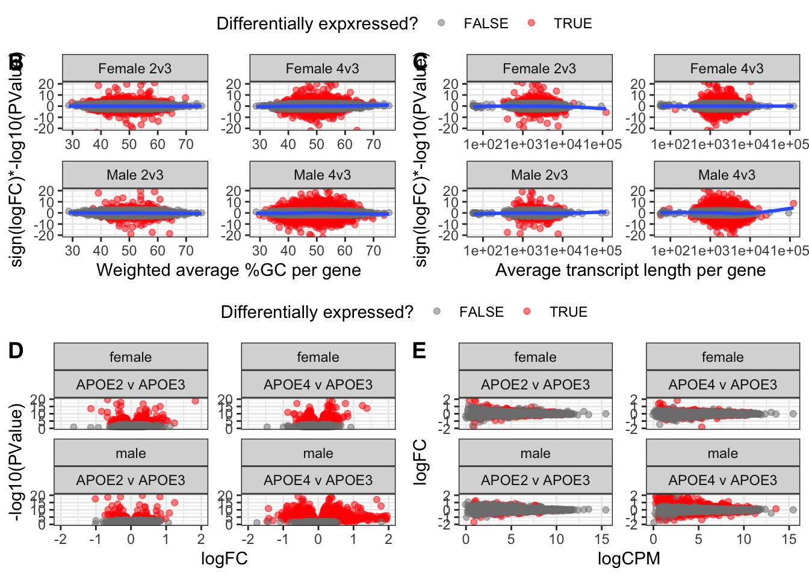
#ggsave("plotsforpub/GC_lenandMDvol_cqn.png", width = 18, height = 20, units = "cm", dpi = 800, scale = 2)First I will import the gene sets I will use in this analysis.
KEGG <- msigdbr("Mus musculus", category = "C2", subcategory = "CP:KEGG") %>%
left_join(gc_len %>%
dplyr::select(entrez_gene = entrezid) %>%
as.data.frame() %>%
rownames_to_column("gene_id") %>%
as_tibble() %>%
unnest()
) %>%
dplyr::filter(gene_id %in% rownames(x_zhaoetal)) %>%
distinct(gs_name, gene_id, .keep_all = TRUE) %>%
split(f = .$gs_name) %>%
lapply(extract2, "gene_id")
ireGenes <-
read_excel("data/ireGenes.xlsx", sheet = "Mouse IREs") %>%
gather(key = "ire", value = "gene_id") %>%
left_join(x_zhaoetal$genes %>%
rownames_to_column("gene_id")) %>%
dplyr::filter(gene_name %in% toptables_cqn$`Female 2v3`$gene_name) %>%
split(f = .$ire) %>%
lapply(magrittr::extract2, "gene_id")The avergae transcript length per gene was used to calculate the pwf.
pwfs <- toptables_cqn %>%
lapply(function(x) {
x %>%
dplyr::select(gene_id, DE, len) %>%
distinct(gene_id, .keep_all = TRUE) %>%
with(
nullp(
DEgenes = structure(
as.integer(DE), names = gene_id
),
genome = "mm9",
id = "ensGene",
bias.data = len,
plot.fit = FALSE
)
)
})One large enrichment test was performed on the overall gene sets
goseq_res <- pwfs %>%
lapply(function(x) {
goseq(x, gene2cat = c(KEGG, ireGenes)) %>%
as_tibble %>%
dplyr::filter(numDEInCat > 0) %>%
mutate(FDR = p.adjust(over_represented_pvalue, method = "fdr")) %>%
dplyr::select(-under_represented_pvalue)
})
goseq_res$`Female 2v3` %<>% mutate(coef = "Female 2v3")
goseq_res$`Male 2v3` %<>% mutate(coef = "Male 2v3")
goseq_res$`Female 4v3` %<>% mutate(coef = "Female 4v3")
goseq_res$`Male 4v3` %<>% mutate(coef = "Male 4v3")goseq_res$`Female 2v3` %>%
head(5) %>%
kable(caption = "Top 5 over-represented KEGG or IRE gene sets in female APOE2 mice") %>%
kable_styling()| category | over_represented_pvalue | numDEInCat | numInCat | FDR | coef |
|---|---|---|---|---|---|
| KEGG_STEROID_BIOSYNTHESIS | 0.0000001 | 9 | 14 | 0.0000102 | Female 2v3 |
| KEGG_ANTIGEN_PROCESSING_AND_PRESENTATION | 0.0049598 | 7 | 36 | 0.4017455 | Female 2v3 |
| KEGG_ADHERENS_JUNCTION | 0.0140867 | 11 | 69 | 0.7606842 | Female 2v3 |
| KEGG_GLYCOSAMINOGLYCAN_DEGRADATION | 0.0289538 | 4 | 16 | 0.8559768 | Female 2v3 |
| KEGG_RETINOL_METABOLISM | 0.0367324 | 3 | 13 | 0.8559768 | Female 2v3 |
goseq_res$`Female 4v3` %>%
head(5) %>%
kable(caption = "Top 5 over-represented KEGG or IRE gene sets in female APOE4 mice") %>%
kable_styling()| category | over_represented_pvalue | numDEInCat | numInCat | FDR | coef |
|---|---|---|---|---|---|
| KEGG_PYRUVATE_METABOLISM | 0.0009573 | 8 | 33 | 0.0825389 | Female 4v3 |
| KEGG_ARGININE_AND_PROLINE_METABOLISM | 0.0010650 | 9 | 41 | 0.0825389 | Female 4v3 |
| KEGG_SPLICEOSOME | 0.0053173 | 16 | 123 | 0.2747272 | Female 4v3 |
| KEGG_GLYCOLYSIS_GLUCONEOGENESIS | 0.0116496 | 7 | 39 | 0.4514230 | Female 4v3 |
| KEGG_AMINOACYL_TRNA_BIOSYNTHESIS | 0.0164772 | 7 | 41 | 0.4658360 | Female 4v3 |
goseq_res$`Male 2v3` %>%
head(5) %>%
kable(caption = "Top 5 over-represented KEGG or IRE gene sets in male APOE2 mice") %>%
kable_styling()| category | over_represented_pvalue | numDEInCat | numInCat | FDR | coef |
|---|---|---|---|---|---|
| KEGG_RENAL_CELL_CARCINOMA | 0.0447702 | 5 | 69 | 0.9447404 | Male 2v3 |
| KEGG_NON_SMALL_CELL_LUNG_CANCER | 0.0557063 | 4 | 51 | 0.9447404 | Male 2v3 |
| All 3’ IREs | 0.0655851 | 70 | 1995 | 0.9447404 | Male 2v3 |
| KEGG_VEGF_SIGNALING_PATHWAY | 0.0888854 | 4 | 61 | 0.9447404 | Male 2v3 |
| KEGG_GRAFT_VERSUS_HOST_DISEASE | 0.0905616 | 1 | 4 | 0.9447404 | Male 2v3 |
goseq_res$`Male 4v3` %>%
head(5) %>%
kable(caption = "Top 5 over-represented KEGG or IRE gene sets in male APOE4 mice") %>%
kable_styling()| category | over_represented_pvalue | numDEInCat | numInCat | FDR | coef |
|---|---|---|---|---|---|
| KEGG_CALCIUM_SIGNALING_PATHWAY | 0.0000746 | 62 | 136 | 0.0138787 | Male 4v3 |
| KEGG_NEUROACTIVE_LIGAND_RECEPTOR_INTERACTION | 0.0004023 | 64 | 149 | 0.0374107 | Male 4v3 |
| KEGG_TASTE_TRANSDUCTION | 0.0011929 | 13 | 20 | 0.0739621 | Male 4v3 |
| KEGG_VASCULAR_SMOOTH_MUSCLE_CONTRACTION | 0.0033579 | 38 | 89 | 0.1561416 | Male 4v3 |
| KEGG_RIBOSOME | 0.0064322 | 28 | 82 | 0.2159789 | Male 4v3 |
sig.genesets.goseq <- goseq_res %>%
bind_rows() %>%
dplyr::filter(FDR < 0.05) %>% .$category
anno_hm <-
toptables_cqn %>%
bind_rows() %>%
dplyr::filter(gene_id %in% c(KEGG$KEGG_CALCIUM_SIGNALING_PATHWAY)
) %>%
dplyr::select(gene_name, DE, coef) %>%
mutate(DE = as.character(DE)) %>%
spread(key = "coef", value = "DE") %>%
column_to_rownames("gene_name")
toptables_cqn %>%
bind_rows() %>%
dplyr::filter(gene_id %in% KEGG$KEGG_CALCIUM_SIGNALING_PATHWAY) %>%
dplyr::select(gene_name, logFC, coef) %>%
spread(key = "coef", value = "logFC") %>%
column_to_rownames("gene_name") %>%
t() %>%
pheatmap(color = colorRampPalette(rev(brewer.pal(name = "RdBu", n = 5)))(100),
breaks = c(seq(min(.), 0, length.out=ceiling(100/2) + 1),
seq(max(.)/100, max(.), length.out=floor(100/2))),
# cellwidth = 7,
# cellheight = 7,
fontsize = 7,
annotation_col = anno_hm,
annotation_colors = list(
`Male 4v3` = c("FALSE" = "grey50", "TRUE" = "green"),
`Female 4v3` = c("FALSE" = "grey50", "TRUE" = "green"),
`Male 2v3` = c("FALSE" = "grey50", "TRUE" = "green"),
`Female 2v3` = c("FALSE" = "grey50", "TRUE" = "green")
)
)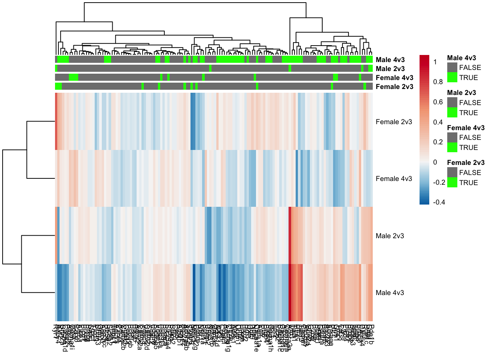
#png("plotsforpub/upsetAPOE4DEgenes.png", width = 5000, height = 2500, res = 1000)
list(
KEGG_NEUROACTIVE_LIGAND_RECEPTOR_INTERACTION = toptables_cqn$`Male 4v3` %>%
bind_rows() %>%
dplyr::filter(DE == TRUE,
gene_id %in% KEGG$KEGG_NEUROACTIVE_LIGAND_RECEPTOR_INTERACTION) %>%
.$gene_name,
KEGG_CALCIUM_SIGNALING_PATHWAY = toptables_cqn$`Male 4v3` %>%
bind_rows() %>%
dplyr::filter(DE == TRUE,
gene_id %in% KEGG$KEGG_CALCIUM_SIGNALING_PATHWAY) %>%
.$gene_name
) %>%
fromList() %>%
upset(order.by = 'freq', nsets = length(.))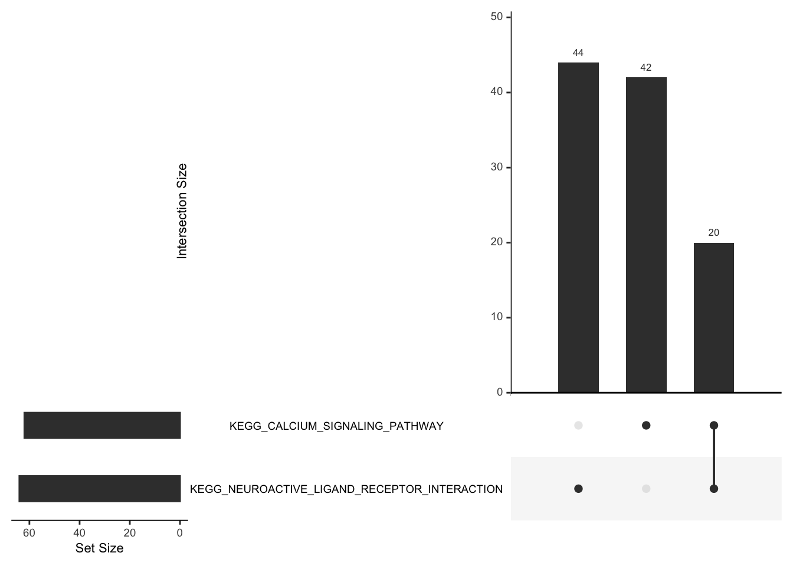
#dev.off()#png("plotsforpub/kegg_ribo.png", width = 35, height = 20, units = "cm", res = 800)
toptables_cqn %>%
bind_rows() %>%
dplyr::filter(gene_id %in% KEGG$KEGG_RIBOSOME) %>%
dplyr::select(gene_name, coef, logFC) %>%
spread(key = "coef", value = logFC) %>%
column_to_rownames("gene_name") %>%
t() %>%
pheatmap(color = colorRampPalette(rev(brewer.pal(n = 7, name =
"RdBu")))(100),
breaks = c(seq(min(.), 0, length.out=ceiling(100/2) + 1),
seq(max(.)/100, max(.), length.out=floor(100/2))),
annotation_row = tibble(comparison = rownames(.)) %>%
mutate(Sex = case_when(
grepl(comparison, pattern = "Male") ~ "male",
grepl(comparison, pattern = "Female") ~ "female",
),
APOE = case_when(
grepl(comparison, pattern = "4v3") ~ "APOE4 v APOE3",
grepl(comparison, pattern = "2v3") ~ "APOE2 v APOE3",
)) %>%
column_to_rownames("comparison"),
annotation_col = toptables_cqn %>%
bind_rows() %>%
dplyr::filter(gene_id %in% KEGG$KEGG_RIBOSOME) %>%
dplyr::select(gene_name, DE, coef) %>%
mutate(coef = str_replace(coef, pattern = "2", replacement = "APOE2"),
coef = str_replace(coef, pattern = "3", replacement = "APOE3"),
coef = str_replace(coef, pattern = "4", replacement = "APOE4"),
coef = str_replace(coef, pattern = "v", replacement = " v "),
DE = as.character(DE)
) %>%
spread(key = "coef", value = "DE") %>%
column_to_rownames("gene_name"),
annotation_colors = list("Male APOE4 v APOE3" = c("FALSE" = "grey60",
"TRUE" = "green2"),
"Male APOE2 v APOE3" = c("FALSE" = "grey60",
"TRUE" = "green2"),
"Female APOE4 v APOE3" = c("FALSE" = "grey60",
"TRUE" = "green2"),
"Female APOE2 v APOE3" = c("FALSE" = "grey60",
"TRUE" = "green2"),
APOE = c( "APOE2 v APOE3" = "purple",
"APOE4 v APOE3" = "orange"),
Sex = c(male = "black",
female = "grey50")
),
cellheight = 15,
legend_breaks = c(seq(-.2, 0.2, by = 0.1), max(.)),
legend_labels = c(seq(-.2, 0.2, by = 0.1), "logFC"),
border_color = NA,
main = "KEGG_RIBOSOME",
fontsize_col= 5
)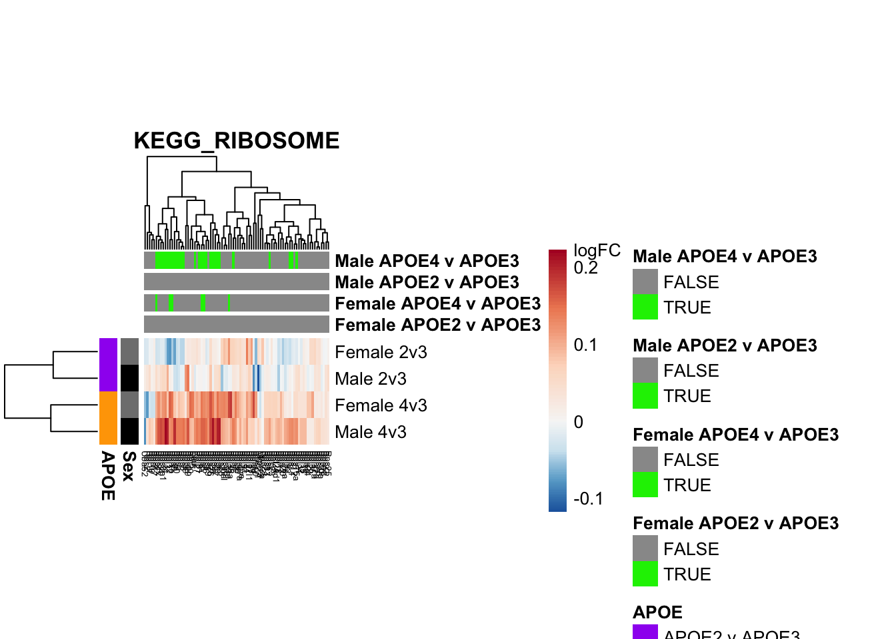
#dev.off()fryRes <- colnames(contrasts) %>%
sapply(function(x){
logCPM_zhaeoetal %>%
fry(index = c(KEGG, ireGenes),
design = design,
contrast= contrasts[,x],
sort = "directional"
) %>%
as.data.frame() %>%
rownames_to_column("geneset") %>%
as_tibble() %>%
mutate(pbonf = p.adjust(PValue, "bonferroni"),
coef = x)
}, simplify = FALSE
)
camera_res <- colnames(contrasts) %>%
sapply(function(x){
logCPM_zhaeoetal %>%
camera(index = c(KEGG, ireGenes),
design = design,
contrast= contrasts[,x]
) %>%
as.data.frame() %>%
rownames_to_column("geneset") %>%
as_tibble() %>%
mutate(pbonf = p.adjust(PValue, "bonferroni"),
coef = x)
}, simplify = FALSE
)
# GSEA
# create a rank stat for fgsea
ranks <-
sapply(toptables_cqn, function(x) {
x %>%
mutate(PValue_withsign = sign(logFC) * log10(1/PValue)) %>%
arrange(PValue_withsign) %>%
dplyr::select(c("gene_id", "PValue_withsign")) %>% #only want the Pvalue with sign
with(structure(PValue_withsign, names = gene_id)) %>%
rev() # reverse so the start of the list is upregulated genes
}, simplify = FALSE)
# Run fgsea
# This takes a while due to the number of permutations
# set a seed for a reproducible result
set.seed(33)
fgsea_res <- ranks %>%
lapply(function(x){
fgseaMultilevel(stats = x, pathways = c(KEGG, ireGenes)) %>%
as_tibble() %>%
dplyr::rename(FDR = padj) %>%
mutate(padj = p.adjust(pval, "bonferroni")) %>%
dplyr::select(c(geneset = pathway), pval, FDR, padj, everything()) %>%
arrange(pval) %>%
mutate(sig = padj < 0.05)
})
fgsea_res$`Female 2v3` %<>% mutate(coef = "Female 2v3")
fgsea_res$`Male 2v3` %<>% mutate(coef = "Male 2v3")
fgsea_res$`Female 4v3` %<>% mutate(coef = "Female 4v3")
fgsea_res$`Male 4v3` %<>% mutate(coef = "Male 4v3")
# harmonic mean
HMP <-
fryRes %>%
bind_rows() %>%
dplyr::select(geneset, PValue, coef) %>%
dplyr::rename(fry_p = PValue) %>%
left_join(camera_res %>%
bind_rows() %>%
dplyr::select(geneset, PValue, coef),
by = c("geneset", "coef")) %>%
dplyr::rename(camera_p = PValue) %>%
left_join(fgsea_res %>%
bind_rows() %>%
dplyr::select(geneset, pval, coef),
by = c("geneset", "coef")) %>%
dplyr::rename(fgsea_p = pval) %>%
bind_rows() %>%
nest(p = one_of(c("fry_p", "camera_p", "fgsea_p"))) %>%
mutate(
harmonic_p = vapply(p, function(x){
x <- unlist(x)
x <- x[!is.na(x)]
p.hmp(x, L = 3)
}, numeric(1))
) %>%
unnest() %>%
mutate(harmonic_p_FDR = p.adjust(harmonic_p, "fdr"),
sig = harmonic_p_FDR < 0.05) %>%
arrange(harmonic_p_FDR)HMP %>%
dplyr::filter(harmonic_p_FDR < 0.01) %>% #group_by(coef) %>% summarise(n = n())
ggplot(aes(coef)) +
geom_bar() +
theme_bw()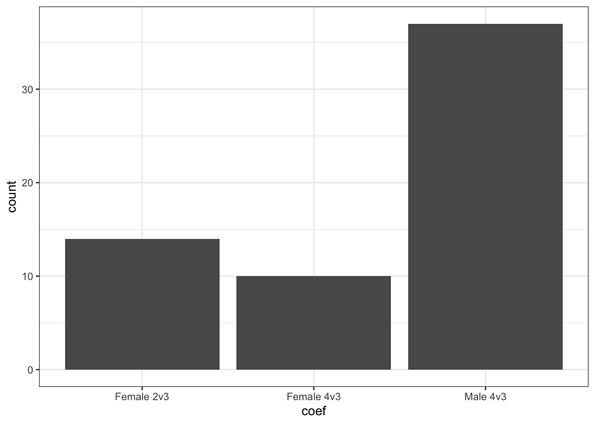
HMP %>%
mutate(Sex = case_when(
grepl(coef, pattern = "Male") ~ "male",
grepl(coef, pattern = "Female") ~ "female",
),
comparison = case_when(
grepl(coef, pattern = "4v3") ~ "APOE4 v APOE3",
grepl(coef, pattern = "2v3") ~ "APOE2 v APOE3",
)) %>%
dplyr::filter(harmonic_p_FDR < 0.01) %>%
ggplot(aes(y= reorder(geneset, -harmonic_p),
x = coef,
fill= -log10(harmonic_p))) +
geom_tile(colour = "black") +
theme_bw() +
facet_wrap(~Sex+comparison, scales = "free") +
scale_fill_viridis_c() +
easy_rotate_x_labels(angle = -45) +
labs(x = "",
y = "Gene set") +
theme(axis.text.x = element_blank(), axis.ticks.x = element_blank()) 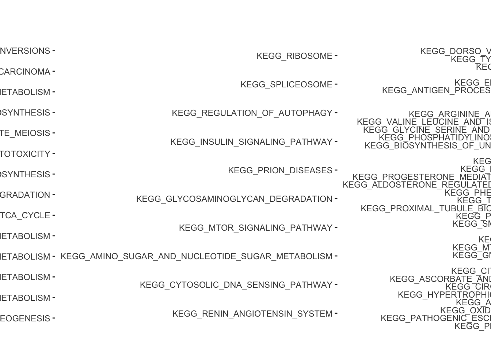
#ggsave("plotsforpub/HMP.png", width = 21.5, height = 10, units = "cm", dpi = 600, scale = 2)upset4v3male <- c(KEGG, ireGenes) %>%
.[c(HMP %>%
dplyr::filter(coef == "Male 4v3" & harmonic_p_FDR < 0.01) %>%
.$geneset)] %>%
lapply(function(x) {
x %>%
intersect(toptables_cqn$`Male 4v3` %>%
dplyr::filter(DE == TRUE) %>%
.$gene_id)
}) %>%
fromList() %>%
upset(nsets = length(.),
order.by = "freq"
)
# convert to cowplot
upset4v3male_cow <- cowplot::plot_grid(NULL, upset4v3male$Main_bar,
upset4v3male$Sizes, upset4v3male$Matrix,
nrow=2, align='hv', rel_heights = c(1,1),
rel_widths = c(1,2))
## female 4v3
upset4v3female <- c(KEGG, ireGenes) %>%
.[c(HMP %>%
dplyr::filter(coef == "Female 4v3" & harmonic_p_FDR < 0.01) %>%
.$geneset)] %>%
lapply(function(x) {
x %>%
intersect(toptables_cqn$`Female 4v3` %>%
dplyr::filter(DE == TRUE) %>%
.$gene_id)
}) %>%
fromList() %>%
upset(nsets = length(.),
order.by = "freq"
)
# convert to cowplot
upset4v3fem_cow <- cowplot::plot_grid(NULL, upset4v3female$Main_bar,
upset4v3female$Sizes,
upset4v3female$Matrix,
nrow=2, align='hv', rel_heights = c(1,1),
rel_widths = c(1,2))
## female 2v3
upset2v3female <- c(KEGG, ireGenes) %>%
.[c(HMP %>%
dplyr::filter(coef == "Female 2v3" & harmonic_p_FDR < 0.01) %>%
.$geneset)] %>%
lapply(function(x) {
x %>%
intersect(toptables_cqn$`Female 2v3` %>%
dplyr::filter(DE == TRUE) %>%
.$gene_id)
}) %>%
fromList() %>%
upset(nsets = length(.),
order.by = "freq"
)
# convert to cowplot
upset2v3fem_cow <- cowplot::plot_grid(NULL, upset2v3female$Main_bar,
upset2v3female$Sizes,
upset2v3female$Matrix,
nrow=2, align='hv', rel_heights = c(1,1),
rel_widths = c(1,2))
upsets <- grid.arrange(upset4v3male_cow) 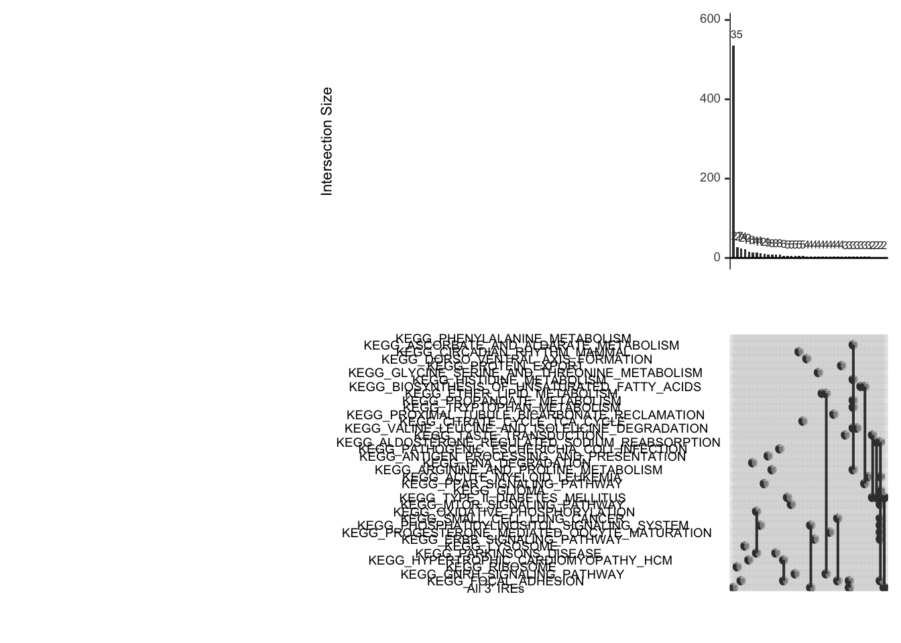
# ggsave(upsets, filename = "plotsforpub/upset_HMP_degenes.png",
# width = 18, height = 10, units = "cm", dpi = 600, scale = 2)toptables_cqn %>%
bind_rows() %>%
mutate(rankstat = sign(logFC)*-log10(PValue)) %>%
ggplot(aes(x = len, y = rankstat)) +
geom_point(alpha = 0.5,
aes(colour = DE)) +
coord_cartesian(ylim = c(-20, 20)) +
facet_wrap(~ coef, scales = "free") +
scale_x_continuous(limits = c(10, 20000),
trans = scales::log10_trans(), ) +
scale_color_manual(values = c("grey50", "red")) +
theme_bw() +
labs(x = "Average transcript length per gene ",
y = "sign(logFC)*-log10(PValue)",
colour = "Differentially expxressed?") +
geom_smooth(se = F)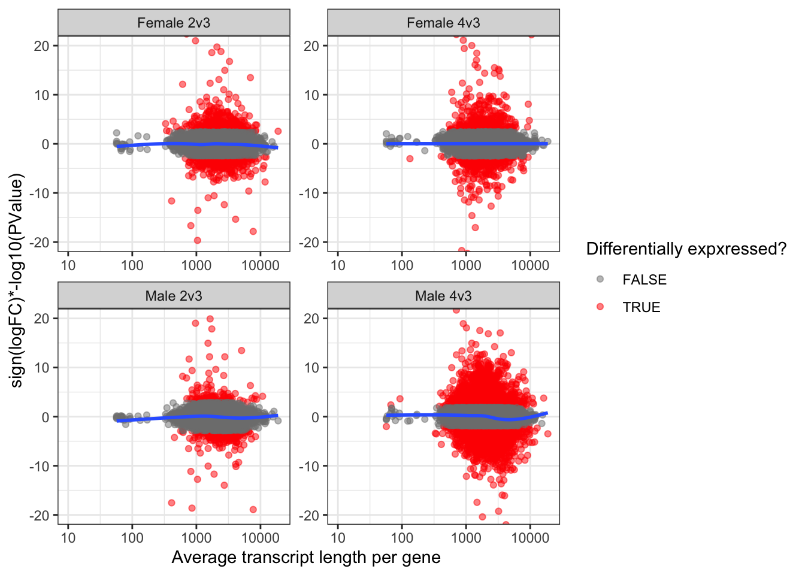
cell_type_markers <- read_xls("data/cell_type_genes41586_2007_BFnature05453_MOESM11_ESM.xls") %>%
dplyr::select(c("Neurons" = "Neuron-enriched"), c("Astrocytes" = "Astrocyte-enriched"), c("Oligodendrocytes" = "Oligodendrocyte-enriched")) %>%
gather("cell_type", "gene_name") %>%
left_join(x_zhaoetal$genes %>%
as.data.frame %>%
rownames_to_column("gene_id") %>%
dplyr::select(gene_name, gene_id)) %>%
na.omit %>%
dplyr::select(-gene_name) %>%
split(f = .$cell_type) %>%
lapply(function(x) {
dplyr::select(x, "gene_id") %>%
.$gene_id
})
cell_type_markers$Microglia <- read_excel("data/microglia_oosterofetal.xlsx",
sheet = 1) %>%
.$Mouse.Ensembl.Gene.ID
ggarrange(
colnames(contrasts) %>%
sapply(function(x){
logCPM_zhaeoetal %>%
fry(index = cell_type_markers,
design = design,
contrast= contrasts[,x],
#sort = "directional"
) %>%
as.data.frame() %>%
rownames_to_column("geneset") %>%
as_tibble() %>%
mutate(pbonf = p.adjust(PValue, "bonferroni"),
coef = x)
}, simplify = FALSE
) %>%
bind_rows() %>%
ggplot(aes(x = -log10(PValue), y = geneset)) +
geom_col(aes(fill = FDR < 0.05)) +
facet_wrap(~coef, nrow = 1) +
theme_bw() +
scale_fill_manual(values = c("grey50", "red")),
ggarrange(
x_zhaoetal %>%
cpm(log=TRUE) %>%
as.data.frame() %>%
rownames_to_column("gene_id") %>%
dplyr::filter(gene_id %in% cell_type_markers$Neurons) %>%
gather(key = "sample", value = "logCPM", colnames(x_zhaoetal)) %>%
left_join(x_zhaoetal$samples) %>%
ggplot(aes(x = Genotype, y = logCPM)) +
geom_violin(trim = FALSE,
aes(fill = Genotype),
alpha = 0.75) +
facet_wrap(~Sex) +
geom_boxplot(width = .4) +
stat_summary(geom = "point", shape = 23, fill = "red", size = 3) +
theme_bw() +
labs(x = "",
fill = "Genotype") +
ggtitle("Neurons") +
scale_fill_viridis_d(),
x_zhaoetal %>%
cpm(log=TRUE) %>%
as.data.frame() %>%
rownames_to_column("gene_id") %>%
dplyr::filter(gene_id %in% cell_type_markers$Astrocytes) %>%
gather(key = "sample", value = "logCPM", colnames(x_zhaoetal)) %>%
left_join(x_zhaoetal$samples) %>%
ggplot(aes(x = Genotype, y = logCPM)) +
geom_violin(trim = FALSE,
aes(fill = Genotype),
alpha = 0.75) +
facet_wrap(~Sex) +
geom_boxplot(width = .4) +
stat_summary(geom = "point", shape = 23, fill = "red", size = 3) +
theme_bw() +
labs(x = "",
fill = "Genotype") +
ggtitle("Astrocytes") +
scale_fill_viridis_d(),
x_zhaoetal %>%
cpm(log=TRUE) %>%
as.data.frame() %>%
rownames_to_column("gene_id") %>%
dplyr::filter(gene_id %in% cell_type_markers$Oligodendrocytes) %>%
gather(key = "sample", value = "logCPM", colnames(x_zhaoetal)) %>%
left_join(x_zhaoetal$samples) %>%
ggplot(aes(x = Genotype, y = logCPM)) +
geom_violin(trim = FALSE,
aes(fill = Genotype),
alpha = 0.75) +
facet_wrap(~Sex) +
geom_boxplot(width = .4) +
stat_summary(geom = "point", shape = 23, fill = "red", size =3) +
theme_bw() +
labs(x = "",
fill = "Genotype") +
ggtitle("Oligodendrocytes") +
scale_fill_viridis_d(),
x_zhaoetal %>%
cpm(log=TRUE) %>%
as.data.frame() %>%
rownames_to_column("gene_id") %>%
dplyr::filter(gene_id %in% cell_type_markers$Microglia) %>%
gather(key = "sample", value = "logCPM", colnames(x_zhaoetal)) %>%
left_join(x_zhaoetal$samples) %>%
ggplot(aes(x = Genotype, y = logCPM)) +
geom_violin(trim = FALSE,
aes(fill = Genotype),
alpha = 0.75) +
facet_wrap(~Sex) +
geom_boxplot(width = .4) +
stat_summary(geom = "point", shape = 23, fill = "red", size = 3) +
theme_bw() +
labs(x = "",
fill = "Genotype") +
ggtitle("Microglia") +
scale_fill_viridis_d(),
common.legend = TRUE
),
common.legend = FALSE,
heights = c(1,4),
ncol = 1,
labels = "AUTO"
) 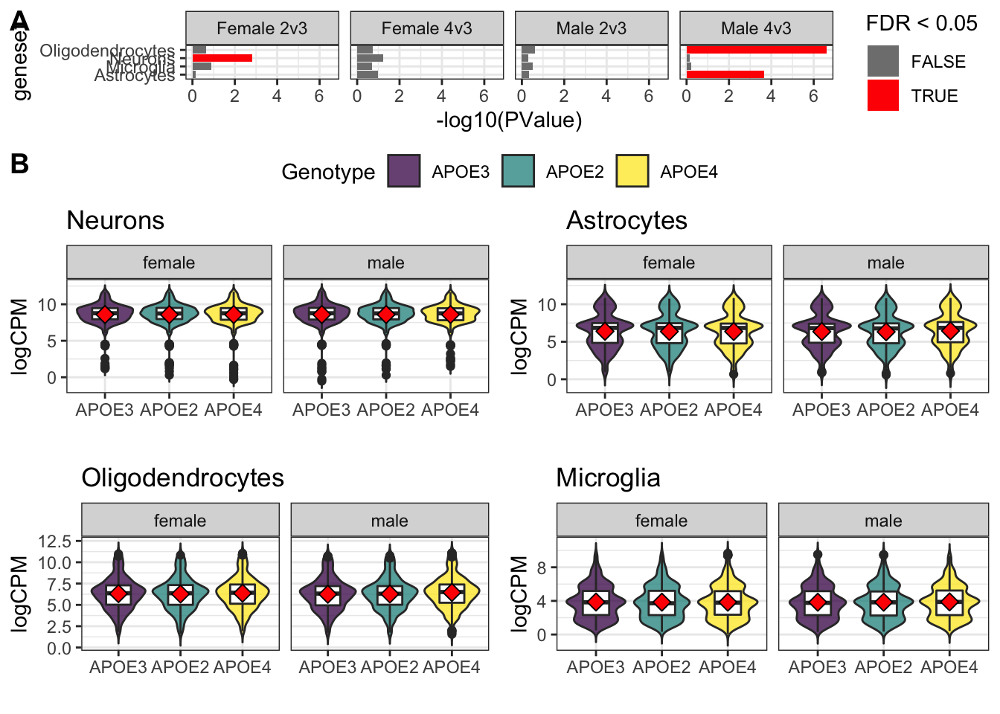
# ggsave("plotsforpub/celltype.png")sessionInfo() %>% pander()R version 4.0.2 (2020-06-22)
Platform: x86_64-apple-darwin17.0 (64-bit)
locale: en_AU.UTF-8||en_AU.UTF-8||en_AU.UTF-8||C||en_AU.UTF-8||en_AU.UTF-8
attached base packages: stats4, parallel, grid, splines, stats, graphics, grDevices, utils, datasets, methods and base
other attached packages: ggsci(v.2.9), pathview(v.1.28.1), ggeasy(v.0.1.2), cowplot(v.1.1.0), RColorBrewer(v.1.1-2), rtracklayer(v.1.48.0), pander(v.0.6.3), kableExtra(v.1.3.1), UpSetR(v.1.4.0), pheatmap(v.1.0.12), ggpubr(v.0.4.0), msigdbr(v.7.2.1), ensembldb(v.2.12.1), AnnotationFilter(v.1.12.0), GenomicFeatures(v.1.40.1), AnnotationDbi(v.1.50.3), Biobase(v.2.48.0), GenomicRanges(v.1.40.0), GenomeInfoDb(v.1.24.2), IRanges(v.2.22.2), S4Vectors(v.0.26.1), AnnotationHub(v.2.20.2), BiocFileCache(v.1.12.1), dbplyr(v.2.0.0), BiocGenerics(v.0.34.0), gridExtra(v.2.3), readxl(v.1.3.1), harmonicmeanp(v.3.0), FMStable(v.0.1-2), scales(v.1.1.1), cqn(v.1.34.0), quantreg(v.5.75), SparseM(v.1.78), preprocessCore(v.1.50.0), nor1mix(v.1.3-0), mclust(v.5.4.7), goseq(v.1.40.0), geneLenDataBase(v.1.24.0), BiasedUrn(v.1.07), ggrepel(v.0.8.2), ggfortify(v.0.4.11), fgsea(v.1.14.0), edgeR(v.3.30.3), limma(v.3.44.3), magrittr(v.2.0.1), forcats(v.0.5.0), stringr(v.1.4.0), dplyr(v.1.0.2), purrr(v.0.3.4), readr(v.1.4.0), tidyr(v.1.1.2), tibble(v.3.0.4), ggplot2(v.3.3.2), tidyverse(v.1.3.0) and workflowr(v.1.6.2)
loaded via a namespace (and not attached): tidyselect(v.1.1.0), RSQLite(v.2.2.1), BiocParallel(v.1.22.0), munsell(v.0.5.0), statmod(v.1.4.35), withr(v.2.3.0), colorspace(v.2.0-0), highr(v.0.8), knitr(v.1.30), rstudioapi(v.0.13), ggsignif(v.0.6.0), labeling(v.0.4.2), KEGGgraph(v.1.48.0), git2r(v.0.27.1), GenomeInfoDbData(v.1.2.3), farver(v.2.0.3), bit64(v.4.0.5), rprojroot(v.2.0.2), vctrs(v.0.3.5), generics(v.0.1.0), xfun(v.0.19), R6(v.2.5.0), locfit(v.1.5-9.4), bitops(v.1.0-6), DelayedArray(v.0.14.1), assertthat(v.0.2.1), promises(v.1.1.1), gtable(v.0.3.0), conquer(v.1.0.2), rlang(v.0.4.9), MatrixModels(v.0.4-1), rstatix(v.0.6.0), lazyeval(v.0.2.2), broom(v.0.7.2), BiocManager(v.1.30.10), yaml(v.2.2.1), abind(v.1.4-5), modelr(v.0.1.8), backports(v.1.2.0), httpuv(v.1.5.4), tools(v.4.0.2), ellipsis(v.0.3.1), Rcpp(v.1.0.5), plyr(v.1.8.6), progress(v.1.2.2), zlibbioc(v.1.34.0), RCurl(v.1.98-1.2), prettyunits(v.1.1.1), openssl(v.1.4.3), SummarizedExperiment(v.1.18.2), haven(v.2.3.1), fs(v.1.5.0), data.table(v.1.13.2), openxlsx(v.4.2.3), reprex(v.0.3.0), whisker(v.0.4), ProtGenerics(v.1.20.0), matrixStats(v.0.57.0), hms(v.0.5.3), mime(v.0.9), evaluate(v.0.14), xtable(v.1.8-4), XML(v.3.99-0.5), rio(v.0.5.16), compiler(v.4.0.2), biomaRt(v.2.44.4), crayon(v.1.3.4), htmltools(v.0.5.0), mgcv(v.1.8-33), later(v.1.1.0.1), lubridate(v.1.7.9.2), DBI(v.1.1.0), rappdirs(v.0.3.1), Matrix(v.1.2-18), car(v.3.0-10), cli(v.2.2.0), pkgconfig(v.2.0.3), GenomicAlignments(v.1.24.0), foreign(v.0.8-80), xml2(v.1.3.2), webshot(v.0.5.2), XVector(v.0.28.0), rvest(v.0.3.6), digest(v.0.6.27), graph(v.1.66.0), Biostrings(v.2.56.0), rmarkdown(v.2.5), cellranger(v.1.1.0), fastmatch(v.1.1-0), curl(v.4.3), shiny(v.1.5.0), Rsamtools(v.2.4.0), lifecycle(v.0.2.0), nlme(v.3.1-150), jsonlite(v.1.7.1), carData(v.3.0-4), viridisLite(v.0.3.0), askpass(v.1.1), fansi(v.0.4.1), pillar(v.1.4.7), lattice(v.0.20-41), KEGGREST(v.1.28.0), fastmap(v.1.0.1), httr(v.1.4.2), GO.db(v.3.11.4), interactiveDisplayBase(v.1.26.3), glue(v.1.4.2), zip(v.2.1.1), png(v.0.1-7), Rgraphviz(v.2.32.0), BiocVersion(v.3.11.1), bit(v.4.0.4), stringi(v.1.5.3), blob(v.1.2.1), org.Hs.eg.db(v.3.11.4) and memoise(v.1.1.0)
sessionInfo()R version 4.0.2 (2020-06-22)
Platform: x86_64-apple-darwin17.0 (64-bit)
Running under: macOS Mojave 10.14.3
Matrix products: default
BLAS: /Library/Frameworks/R.framework/Versions/4.0/Resources/lib/libRblas.dylib
LAPACK: /Library/Frameworks/R.framework/Versions/4.0/Resources/lib/libRlapack.dylib
locale:
[1] en_AU.UTF-8/en_AU.UTF-8/en_AU.UTF-8/C/en_AU.UTF-8/en_AU.UTF-8
attached base packages:
[1] stats4 parallel grid splines stats graphics grDevices
[8] utils datasets methods base
other attached packages:
[1] ggsci_2.9 pathview_1.28.1 ggeasy_0.1.2
[4] cowplot_1.1.0 RColorBrewer_1.1-2 rtracklayer_1.48.0
[7] pander_0.6.3 kableExtra_1.3.1 UpSetR_1.4.0
[10] pheatmap_1.0.12 ggpubr_0.4.0 msigdbr_7.2.1
[13] ensembldb_2.12.1 AnnotationFilter_1.12.0 GenomicFeatures_1.40.1
[16] AnnotationDbi_1.50.3 Biobase_2.48.0 GenomicRanges_1.40.0
[19] GenomeInfoDb_1.24.2 IRanges_2.22.2 S4Vectors_0.26.1
[22] AnnotationHub_2.20.2 BiocFileCache_1.12.1 dbplyr_2.0.0
[25] BiocGenerics_0.34.0 gridExtra_2.3 readxl_1.3.1
[28] harmonicmeanp_3.0 FMStable_0.1-2 scales_1.1.1
[31] cqn_1.34.0 quantreg_5.75 SparseM_1.78
[34] preprocessCore_1.50.0 nor1mix_1.3-0 mclust_5.4.7
[37] goseq_1.40.0 geneLenDataBase_1.24.0 BiasedUrn_1.07
[40] ggrepel_0.8.2 ggfortify_0.4.11 fgsea_1.14.0
[43] edgeR_3.30.3 limma_3.44.3 magrittr_2.0.1
[46] forcats_0.5.0 stringr_1.4.0 dplyr_1.0.2
[49] purrr_0.3.4 readr_1.4.0 tidyr_1.1.2
[52] tibble_3.0.4 ggplot2_3.3.2 tidyverse_1.3.0
[55] workflowr_1.6.2
loaded via a namespace (and not attached):
[1] tidyselect_1.1.0 RSQLite_2.2.1
[3] BiocParallel_1.22.0 munsell_0.5.0
[5] statmod_1.4.35 withr_2.3.0
[7] colorspace_2.0-0 highr_0.8
[9] knitr_1.30 rstudioapi_0.13
[11] ggsignif_0.6.0 labeling_0.4.2
[13] KEGGgraph_1.48.0 git2r_0.27.1
[15] GenomeInfoDbData_1.2.3 farver_2.0.3
[17] bit64_4.0.5 rprojroot_2.0.2
[19] vctrs_0.3.5 generics_0.1.0
[21] xfun_0.19 R6_2.5.0
[23] locfit_1.5-9.4 bitops_1.0-6
[25] DelayedArray_0.14.1 assertthat_0.2.1
[27] promises_1.1.1 gtable_0.3.0
[29] conquer_1.0.2 rlang_0.4.9
[31] MatrixModels_0.4-1 rstatix_0.6.0
[33] lazyeval_0.2.2 broom_0.7.2
[35] BiocManager_1.30.10 yaml_2.2.1
[37] abind_1.4-5 modelr_0.1.8
[39] backports_1.2.0 httpuv_1.5.4
[41] tools_4.0.2 ellipsis_0.3.1
[43] Rcpp_1.0.5 plyr_1.8.6
[45] progress_1.2.2 zlibbioc_1.34.0
[47] RCurl_1.98-1.2 prettyunits_1.1.1
[49] openssl_1.4.3 SummarizedExperiment_1.18.2
[51] haven_2.3.1 fs_1.5.0
[53] data.table_1.13.2 openxlsx_4.2.3
[55] reprex_0.3.0 whisker_0.4
[57] ProtGenerics_1.20.0 matrixStats_0.57.0
[59] hms_0.5.3 mime_0.9
[61] evaluate_0.14 xtable_1.8-4
[63] XML_3.99-0.5 rio_0.5.16
[65] compiler_4.0.2 biomaRt_2.44.4
[67] crayon_1.3.4 htmltools_0.5.0
[69] mgcv_1.8-33 later_1.1.0.1
[71] lubridate_1.7.9.2 DBI_1.1.0
[73] rappdirs_0.3.1 Matrix_1.2-18
[75] car_3.0-10 cli_2.2.0
[77] pkgconfig_2.0.3 GenomicAlignments_1.24.0
[79] foreign_0.8-80 xml2_1.3.2
[81] webshot_0.5.2 XVector_0.28.0
[83] rvest_0.3.6 digest_0.6.27
[85] graph_1.66.0 Biostrings_2.56.0
[87] rmarkdown_2.5 cellranger_1.1.0
[89] fastmatch_1.1-0 curl_4.3
[91] shiny_1.5.0 Rsamtools_2.4.0
[93] lifecycle_0.2.0 nlme_3.1-150
[95] jsonlite_1.7.1 carData_3.0-4
[97] viridisLite_0.3.0 askpass_1.1
[99] fansi_0.4.1 pillar_1.4.7
[101] lattice_0.20-41 KEGGREST_1.28.0
[103] fastmap_1.0.1 httr_1.4.2
[105] GO.db_3.11.4 interactiveDisplayBase_1.26.3
[107] glue_1.4.2 zip_2.1.1
[109] png_0.1-7 Rgraphviz_2.32.0
[111] BiocVersion_3.11.1 bit_4.0.4
[113] stringi_1.5.3 blob_1.2.1
[115] org.Hs.eg.db_3.11.4 memoise_1.1.0